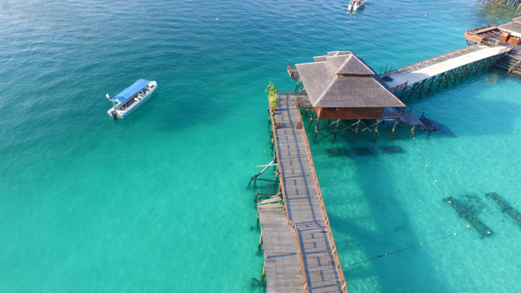

ADVENTURES & ACTIVITIES AT MABUL ISLAND
What does Sea Gypsies do for a living? What is their occupation? What is their skills?
We are sure everyone are curious and does not know what Mabul Island can offer to tourist?.
MABUL ISLAND
Divers worldwide flock here all year round for the chance to encounter and photograph not just the reefs,pelagics and colourful fish, but also the incredible variety of tiny, and sometimes rare, macro marine life that thrive in the surrounding waters of Mabul.The island were once inhabited solely by the small, dispersed bajau laut and Suluk families also known as sea gypsies. These ethnic group are stateless people. They moving from islands to islands between Malaysia, Indonesia ang Philipines as they are not afforded a citizenship status by any of the countries. Due to this they reside freely but only on water of the Celebeas Sea and Sulu Sea either on boats or houses.
FREE DIVERS
The sea gypsies are exceptional free divers. Many have mastered the art of free diving to depth of well over 20m while holding their breath for several minutes.All this as they hunt for fish,lobsters,sea cucumber and other marine life.
CONSTRUCTION
They are also skilled at constructing a pile of houses and boats called lepa. The community living with these boats is seen as a non-aggressive community, living in peace, near the beach by building houses on the ocean as well as making lepa, self-built boats, as the main transportation. Lucky visitors travelling to this part of the world to see the Sea Gypsies living in wooden houseboats and stilt huts carefully build the coral reef making this an attraction not to be missed.
BUSINESS
Sea Gypsies rarely set foot on land. Preferring the sea, they would only go offshore for business. This may include their catches, collecting fresh water for drinking or wood for making boat and as well as bury the dead. Most would return to their boats by nightfall.
TOURIST'S ADVENTURE